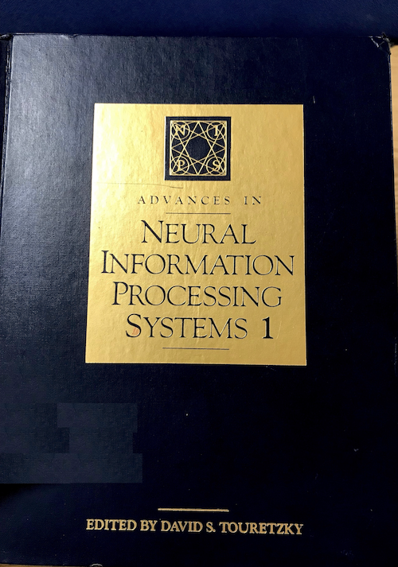

Peer-reviewed conferences and workshops
- S. Bartels, K. Stensbo-Smidt, P. Moreno-Muñoz, J. Frellsen, W. Boomsma and S. Hauberg.
Adaptive Cholesky Gaussian Processes,
In Artificial Intelligence and Statistics (AISTATS), 2023
[pdf]
[preprint]
[code]
- M. Miani, F. Warburg, P. Moreno-Muñoz, N. S. Detlefsen and S. Hauberg.
Laplacian Autoencoders for Learning Stochastic Representations,
In Advances in Neural Information Processing Systems (NeurIPS), 2022
[pdf]
[preprint]
[code]
- P. Moreno-Muñoz, C. W. Feldager and S. Hauberg.
Revisiting Active Sets for Gaussian Process Decoders,
In Advances in Neural Information Processing Systems (NeurIPS), 2022
[pdf]
[preprint]
[code]
[poster]
- P. Moreno-Muñoz, A. Artés-Rodríguez and M. A. Álvarez.
Modular Gaussian Processes for Transfer Learning,
In Advances in Neural Information Processing Systems (NeurIPS), 2021
[pdf]
[preprint]
[video]
[poster]
[slides]
- P. Moreno-Muñoz, L. Romero-Medrano, A. Moreno, J. Herrera-López, E. Baca-García and A. Artés.
Passive Detection of Behavioral Shifts for Suicide Attempt Prevention,
In Machine Learning for Mobile Health Workshop @ NeurIPS, 2020
[pdf]
- L. Romero-Medrano, P. Moreno-Muñoz and A. Artés-Rodríguez.
Multinomial Sampling for Hierarchical Change-point Detection,
In IEEE International Workshop on Machine Learning for Signal Processing (MLSP), 2020
[preprint]
- P. Moreno-Muñoz, D. Ramírez and A. Artés-Rodríguez.
Continual Learning for Infinite Hierarchical Change-point Detection,
In International Conference on Acoustics, Speech and Signal Processing (ICASSP), 2020
[preprint]
[code]
[video]
- P. Moreno-Muñoz, A. Artés-Rodríguez and M. A. Álvarez.
Heterogeneous Multi-output Gaussian Process Prediction,
In Advances in Neural Information Processing Systems (NeurIPS), 2018 (spotlight)
[paper]
[code]
[video]
[poster]
Preprints and ongoing works
- P. Moreno-Muñoz, P. G. Recasens and S. Hauberg.
On Masked Pre-training and the Marginal Likelihood,
Under submission, 2022
[preprint]
- P. Moreno-Muñoz, P. Schwöbel and S. Hauberg.
Stochastic Combinatorics for Gaussian Processes,
In preparation, 2022
- H. Hauschultz, R. B. Palm, P. Moreno-Muñoz, N. S. Detlefsen, A. A. du Plessis and S. Hauberg.
Is an Encoder within Reach?,
In arXiv:2206.01552, 2022
[preprint]
- P. Moreno-Muñoz, A. Artés-Rodríguez and M. A. Álvarez.
Continual Multi-task Gaussian Processes,
In arXiv:1911.00002, 2019, (work in progress)
[preprint]
[code]
[video]
Journals
- M. L. Barrigón, L. Romero-Medrano, P. Moreno-Muñoz, A. Porras-Segovia,
J. López-Castroman, A. Artés-Rodríguez and E. Baca-García.
One-week suicide risk prediction using real-time smartphone monitoring,
Under submission, 2022
- L. Romero-Medrano, P. Moreno-Muñoz and A. Artés-Rodríguez.
Multinomial Sampling of Latent Variables for Hierarchical Change-point Detection,
In Journal of Signal Processing Systems - MLSP 2020 Special Issue, 2021
[paper]
(extended version of workshop paper [pdf] )
- P. Moreno-Muñoz, D. Ramírez and A. Artés-Rodríguez.
Change-point Detection in Hierarchical Circadian Models,
In Pattern Recognition, 2020
[paper]
[preprint]
[code]
- S. Berrouiguet, D. Ramírez, M. L. Barrigón, P. Moreno-Muñoz, R. Carmona, E. Baca-García and A. Artés-Rodríguez.
Combining continuous smartphone native sensors data capture and unsupervised data
mining techniques for behavioral changes detection: A case series of the Evidence Based Behavior (eB2)
study,
In Journal of Medical Internet Research (JMIR), 2018
[paper]
Dissertations
- P. Moreno-Muñoz.
Probabilistic Models for Human Behavior Learning
PhD Thesis, March 2021
[pdf]
- P. Moreno-Muñoz.
Change Point Detection in Behavioral High Dimensional Data
Master Thesis (2/2), 2016
- P. Moreno-Muñoz.
Anomalous Behavior Detection in Psychiatry
Master Thesis (1/2), 2016
- P. Moreno-Muñoz.
Photometric Redshifts within crowded galaxy cluster fields
ESA Project Report, 2015
- P. Moreno-Muñoz.
Statistical learning costs with partial labels (spanish)
Bachelor Thesis, 2014